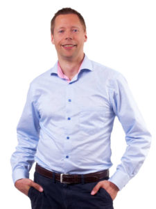
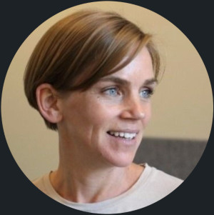

Video från Agila Örebros konferens våren 2024
Rikard Olsson
Beyond Budgeting
Keji Adedeji
Taming your gremlins
Magnus Billgren
Speedlayers
Darja Šmite
Remote working
Francesca Cortesi
Vår resa med continuous discovery
Johan Forngren
Blixttal 1
Richard Tonysson
Blixttal 2
Fredric Palmgren
Blixttal 3
Video från Agila Örebros konferens våren 2023
Ola Ellnestam
10 000 timmar i samma kodbas - vad har jag lärt mig
Mirjam Hellgren
Psykologisk trygghet
Att omsätta agila strukturer till verklig agilitet
Tobias
Samarbete och dess betydelse för framgång
Mats Snäll
Covidbevis i rekordfart med agil superkraft
Blixttal 2023
Dick Lyhammar & Erik Hultgren (Agilpodden)- 15 Lärdomar
Stina Odlingson- Feedback
Jonas Carlsson - Resolving Limbo
Michael Lundin - Den Agila Löken
Höstevent 2022

Maria Åkerlund
24:e november, 2022
Äntligen är det dags för Agila Örebros höstevent 2022! I år lyssnar vi på Maria Åkerlund, VD för GDQ Associates.
Integrative Model of Group Development (IMGD) är en modell, framtagen av Susan Wheelan efter många års studier och forskning kring vad det är som gör en del grupper mer framgångsrika än andra. Modellen är ett kraftfullt verktyg för att utveckla arbetsgrupper till högpresterande team. GDQ är ett instrument för att mäta var i utvecklingen en grupp befinner sig och hjälper team och ledare att föra grupper framåt och skapa högpresterande team.
Maria kommer att prata om vad ett team är samt förutsättningar för och steg i teams utveckling. Förändringar i organisationer och arbetsliv som pågår diskuteras, och hur de påverkar teamarbete. Vi får också höra om resultat från den senaste forskningen om viktiga teamprocesser som sammanhållning, ytliga och djupa olikheter, samt psykologisk trygghet. Slutligen kommer Maria att tala om metoder för utveckling av team som har stöd i forskningen och inte minst kopplingen mellan teamutveckling och agilitet.
Maria har arbetat som konsult inom arbetspsykologi i 25 år och är en av grundarna och ägarna av Henrysson Åkerlund AB där hon arbetar idag med ledarutveckling, teamutveckling, handledning och utbildningar. År 2005 introducerade Maria the Group Development Questionnaire (GDQ) i Sverige och medverkade till översättning och anpassning till svenska av GDQ. Hon är certifierad GDQ-utbildare och har hållit ett 50-tal certifierings-kurser. Sedan 2015 är Maria också delägare i och vd för GDQ Associates AB som äger GDQ. År 2019 kom boken Teamutveckling i teori och praktik ut som Maria skrivit tillsammans med Christian Jacobsson.
Materialet från Marias presentation hittas på denna länk.
Konferens 2022
Redefining Leadership
Shift from a Culture of Permission and Waiting, to Intent and Action
 Our old ideas of good
leadership is where the leader knows all, tells all and is always in
control. In fact, it’s difficult for us to change because those old
habits are so hardwired in our brains! Intent-Based Leadership™
offers a way for us to rewire: to give control, trust and learn to
be okay with not having all the answers. It's a way of leading where
the leader sets the environment for others to excel and act to the
maximum extent of their creativity and intellect; where team members
come to the leader describing what they see, what they think, and
what they intend to do. The result: the culture of the organization
shifts from one of permission and waiting, to intent and action, and
people feel more valued and come to better solutions.
Our old ideas of good
leadership is where the leader knows all, tells all and is always in
control. In fact, it’s difficult for us to change because those old
habits are so hardwired in our brains! Intent-Based Leadership™
offers a way for us to rewire: to give control, trust and learn to
be okay with not having all the answers. It's a way of leading where
the leader sets the environment for others to excel and act to the
maximum extent of their creativity and intellect; where team members
come to the leader describing what they see, what they think, and
what they intend to do. The result: the culture of the organization
shifts from one of permission and waiting, to intent and action, and
people feel more valued and come to better solutions.
Jenni will share the principles of Intent-Based Leadership™ – what it takes to give control and achieve excellence in your organization. This way of leading is the key to successful Agile implementations in companies of all sizes.
Jenni Jepsen works as a transformation advisor at
Denmark-based goAgile. She helps people transform organizations to
create lasting change. By focusing on the value to be achieved and
understanding where clients are at and where they want to go, Jenni
works closely with them to increase organizational effectiveness,
motivation and results. goAgile’s point of difference is to help
people in organizations help themselves in this process, and Jenni
has proven experience supporting people so they thrive through
change. In this way, organizations transform into places where
people achieve real value and delight customers every day.
Jenni is recognized for her work in change leadership,
communications, and Agile. She integrates neuroscience concepts into
her coaching, training and sparring with leaders at every level. In
addition to having her certificate in NeuroLeadership, Jenni is also
a certified Intent-Based Leadership™ Practitioner, certified LEGO®
Serious Play™ facilitator, and has numerous Agile certifications.
Jenni consults, writes and speaks worldwide about leadership, teams, and how to take advantage of how our brains function to get optimal thinking in the workplace. She runs Intent-based Leadership™ courses together with award-winning author of Turn the Ship Around! L. David Marquet, and is currently writing a book about how leaders create ownership.
Successful Digitalisation Through Agile Contracting
Most things today are impacted by software, one way of the other. But let’s face it, IT is tricky and it’s easy to get derailed. If we want to succeed with digitalisation, then we need to do it better than any IT project we have done before. We have to start at the procurement stage. And write contracts with clear Effect goals. But how do we do that? In this talk we will walk through the building blocks of Agile contracting and why this is a key to our country’s competitiveness. We will also share case examples, of where it’s being applied and the learnings so far.
Mattias Skarin: Sun Tzu once said that the ultimate responsibility of generalship is to maneuver into a position of success. My quest is to figure out how best to do just that in complex fast-moving environments.
How do we use Agile to evolve areas outside IT, such as marketing, product management, has been a focus of mine for the last number of years.
I’m one of the founders of agilakontrakt.se and the author of two books “Real World Kanban” and “Kanban and Scrum, making the most of both”.
Mia Kolmodin has a background in designing customer centric products and services. Today she designs customer centric organisations and processes, using design thinking, systems thinking and Lean UX to enable collaboration and innovation across organizations. She has worked in Agile teams, Lean Startups and scaled Agile setups for 15 years. She is the founder of the Agile Coaching company Dandy People in Stockholm, co-founder of Agilakontrakt.se and you might know her from the Agile in a Nutshell series of infographic posters that they share for free, all to make people feel awesome.
Mechanisms over Methods
Synchronizing Heartbeats of Unconventional Start-ups

How do you build a new business model and ensure cross-organizational deliveries in a startup that sits in a big corporate environment? Especially in an area driving high complexity and consisting of multiple moving parts of different agile maturity and understanding. And how do you go from a department of a big machinery to a stand-alone company without sacrificing deliveries?
Agile best practices and methodologies will only get us so far when we are disrupting the core whilst being in it. In order to get the cogwheels turning in the same pace and ensuring nobody drops the ball, we need to create a learning environment, promoting agile mechanisms rather than methodologies. At the same time focusing on actual deliveries rather than delivery practices or ceremonies.
We created a delivery engine where we combine both digital and business deliveries to enable all teams involved to work towards the same objectives. Inviting people to shape how we constantly improve our way of working. Adapting each cycle in a pragmatic way, utilizing Scrum or SAFe mechanisms when it makes sense, but constantly ensuring value is added by each new introduction. Never losing focus on delivery, actual outcome, and connection to business value and results.
Join me as I share my experience on what worked for us as in two unconventional start-up scenarios and how you can use Agile mechanisms over Agile methods in your organization.
Stina Linderoth works as Head of commercial products at Aurobay (a sister company to Volvo Cars) and has previous background with Care by Volvo and agile transformation within Volvo Cars.
Over the last six years she has been part of the agile transformation of Volvo Cars Digital and also headed up the Care by Volvo delivery engine, enabling complex digital deliveries across product areas and organizations. A role critical to handling collaboration of efforts and dependencies to continuously evolve and optimize the business model. Today she is establishing the Commercial digital landscape at Aurobay, a start-up with an already established global operation .
She is an experienced leader with experience in digital change initiatives and related methodologies, with a focus on enabling value delivery and building strong team culture. She is a strong beliver in the importance of creating an environment where people are supported to speak up, innovate and experiment, and foster an atmosphere of idea generation and creative thinking.
The Science of Fairness

When members of an organization perceive the workplace as fair, it has a significant positive impact, both economic and psychological.
Research shows that understanding and applying fairness has a tremendous positive impact on an organization and attempting to improve fairness can be very valuable.
Many things in organizations breathe fairness implemented - from salary frameworks, promotion processes, benefits packages to systems and frameworks (i.e like agile, sociocracy, and so on) how we organize ourselves. But the basic bit and fundamentals of fairness are often hidden.
Understanding what fairness really is can help organizations a lot, wherever you are in the organization.
This talk will cover the science of fairness, all the way from what it is and actual ways to apply fairness and with quite some precision, to increase fairness in organizations.
Victoria Vallström spent the past 20 years in software development, creating products in groups. In startups, hypergrowth companies, and more traditional companies. Large and small.
17 of those 20 years in all kinds of leadership roles - from board-and-executive, leader of leaders, to first-line manager. In an oscillating pattern - back and forth - as she loves fresh perspectives.
15 years in Silicon Valley - mainly in enterprise software. During her time at VMware, they grew from ~70 to over 10,000 employees. Past 5 years, in Sweden, at various types of product companies, mainly consumer products.
Victoria also is the creator of the podcast bitcurious. A narrative non-fiction podcast about us, humans, working and creating things together. Exploring & sharing findings from deep dives in the science of fundamentals that sometimes are forgotten or hidden in systems or buzz words. Such as flow, autonomy, fairness, power, and so on…
Portalen till jobbet

Varför ändrar vi vårt sätt att tänka när vi går igenom dörren till jobbet och vad har spagetti och köttfärssås och en resa till Danmark med Agilt att göra?
Dick Lyhammar från Göteborg jobbar på Scania som IT director, driver Agilpodden och ledarskapspodden.
Erik Hultgren från Jönköping jobbar på Spotify som Engineering manager, driver Agilpodden och ledarskapspodden.
Både Dick och Erik medverkar som representanter för Agilpodden.
Blixttal
Jeanette Hultin - Transportstyrelsens resa mot produktområden
Fredric Palmgren - Det utmanande teamet
Erik Ågren - Framtidens konsultbolag
Vårevent 2021

Organization agility using S3
with Michael Göthe
Effective cross-organizational collaboration and decision making using patterns from S3 (Sociocracy 3.0) to harness collective intelligence.
Within agile, we have been extremely successful in optimizing the operational value flow, but the organization itself, its culture, structure, and governance are usually very traditional and not at all agile.
S3 is a collection of patterns, designed to create a better collaboration that permeates the entire organization. This leads to increased participation and engagement.
You will get an insight into how a number of the S3 patterns have been used in several organizations to enable, among other things, increased decentralization, improvement work across the organization and a faster decision-making process.
Some of the most powerful patterns are Driver, Proposal Forming, Consent Decision Making, Role selection, Role effectiveness review, Navigate via tension and many more.
About Michael Göthe
Michael is an Agile Organisational Coach at Crisp in Stockholm. He is a co-founder of the agile community Agile People and a co-organizer of the yearly Agile People Sweden Conference.
He is passionate about transforming organizations and businesses to become truly Agile organizations that not only create fantastic value for customers but also is an inspiring place for people to work.
Michael has extensive experience since 25 years of building high performance team-based Agile organizations in large multi-national/cultural organizations as well as start-up companies, public sector, and non-profits.
Some of his skills are Agile, Lean, Scrum, Kanban, Lean Start-up, Complexity and Systems thinking, organizational, team and executive coaching, Facilitation, Leadership development, Sociocracy 3.0, and Open Participatory Organizations.
This event occured on March 2, 2021. Thanks to Michael and all the participants!
Slides are available: Organizational agility using S3.
References:
Höstevent 2019
Employeeship and Leadership – Key Factors in Agile Transformations
These are interesting times, when agile is becoming ever more popular. Agile is adopted by more and more companies, and not just for software development. Many companies invest a great deal of time and money in their agile transformations, and while a some organizations are successful on a level that never happened five years ago, many also fail – some spectacularly. In this session, Henrik Berglund will share his learnings from guiding many agile transformation attempts over ten years. If you want to help your organization towards agility and greatness, you will walk away from this session having learned from Henrik’s experience of some common traps and success factors of agile improvement work.
About Henrik
Henrik has 20+ years of professional software product development experience. He has been working as a developer, technical lead, architect, trainer and coach and he has been a practitioner of agile ways of working for more than a decade. Building on a strong technical background he has spent the last ten years working on organizational change, team dynamics and modern product management/development. His specialties are agile transformations, agile leadership, change management, teams, Scrum, XP and Lean.
This event happened on November 14, 2019.
Thank you to Henrik Berglund for an inspiring talk and enlightening exercise, and thanks to all who came and listened and participated. Henrik has offered to make his slides available, you can find them here: Employeeship and Leadership, Key Factors in Agile Transformations.
Konferens 2019
Jurgen Appelo – Shakeup and Speedup – Shifting up the Innovation Funnel (for businesses that want to change and innovate faster)
Starting new teams and scaling up innovation is more important than ever. The key to success is applying different practices in different stages of the innovation lifecycle. What works for a new business does not work for a mature one, and vice versa. In this talk, we will nosedive into the major good practices for business leaders and product teams, from the moment they have an innovative idea to the day they will scale it up (or screw it up). Everything depends on the lifecycle stage of the new product or service.
With his company Agility Scales, Jurgen is inventing the future of organizational agility. Why are we wasting our time learning how to manage companies, when very soon computers will navigate us through our work-lives and help us to lead and manage our teams? As a serial founder, successful entrepreneur, author and speaker, Jurgen is pioneering management to help creative organizations survive and thrive in the 21st century. He offers concrete games, tools, and practices, so you can introduce better management, with fewer managers. He also offers a platform for you to share your practices and stories with the rest of the world.
Gitte Klitgaard – Safety and Courage – two sides of the same coin?
Though the term “Psychological safety” was first coined (pun intended) in 1965, it went mostly unnoticed until the end of the millennium. After Google looked into what makes a hyper effective team and Modern Agile started presenting “safety as prerequisite”, the term has been quite popular in the IT industry; especially in the agile world.
But what is it? Why is it important? Is it the same as being brave? Or is that something totally different? Stay tuned for the next episode of… I mean for my talk 🙂
Gitte Klitgaard is an agile coach, hugger, friend, and much more. She lives and love agile. She took the oath of non-allegiance. Why fight over methods when we can use the energy to help people? Gitte wants to change the world by helping people. Her preferred tools are listening, intuition, and caring. And: the retrospective. Inspecting and adapting is essential.
She has a great interest in how people function, courage and vulnerability, how we can feel safe at work, how the brain works, what motivates us, how we can feel better about our selves, how to be perfect in all our imperfections.
She is a geek and passionate about a lot 🙂
Bjarte Bogsnes – An introduction to Beyond Budgeting – business agility in practice
- The problems with traditional management
- Why scaling agile has been difficult
- Beyond Budgeting – business agility in practice
- Companies on the journey, including Equinor
- Implementation experiences and advice
Bjarte Bogsnes has a long international career, both in Finance and HR (he even has a short IT career!). He has been heading up the implementation of Beyond Budgeting at Equinor (formerly Statoil), Scandinavia’s largest company. Bjarte is Chairman of Beyond Budgeting Roundtable (BBRT). He is a popular international business speaker and is the winner of a Harvard Business Review/McKinsey Management Innovation award. Bjarte is also author of “Implementing Beyond Budgeting – Unlocking the Performance Potential”, where he writes about his almost twenty-five years long Beyond Budgeting journey. Equinor has opened up for Bjarte to undertake select external consulting work.
Blixttal
Björn Wismén – Bränn inte pengarna – få medarbetarna att brinna istället
David Sundelius – EISOATBF:er eller Ett Inkluderande Språk Och Andra TreBokstavsFörkortningar
Isabelle Svärd – Genom agilt förändringsarbete och förändrat ledarskap har vi skapat en agil arbetsplats på Skatteverkets Applikationsenhet i Västerås på bara sex månader
Thom Persson – Motiverande coachning i teamet
Laszlo Fischer – Komplexitet, osäkerhet, snuttefilt och att bli vuxen
Torbjörn Ryber – Kundresa, tjänstekarta och story map
Höstevent 2018
Räddning: Historien om sjukhuset Bungsu
Hur Lean , Kanban och agilt räddade ett sjukhus i Indonesien
När du inte har något tillstånd för din verksamhet, inga kunder och byggnaden som du arbetar i faller ihop så ger de flesta organisationer upp. Men inte Frälsningsarméns sjukhus i Bandung Indonesien – de bestämde sig för att försöka rädda sjukhuset och jag var glad att kunna hjälpa dem på deras resa.
Vem är jag då? En lean/agil coach. En västerlänning med liten eller ingen kunskap om hur man driver ett sjukhus.
Vi började tillämpa kanban-principer, och lyckades vända annalkande katastrof till någonting fantastiskt. Det var en total transformation, inte bara av organisationen utan det påverkade också livet för flera av medarbetarna. Medan jag arbetade med sjukhuset, skaffade jag mig insikter i vad principerna i lean och kanban faktiskt betyder, och hur de kan användas för att göra oss mer effektiva. Och även rädda oss från katastrof…
Detta tal vänder sig givetvis till de som är intresserade av agilt arbetssätt, ledarskap eller förändringsledning, men innehållet går att ta till sig av alla.
Marcus Hammarberg berättar den inspirerande historien om sjukhuset Bungsu som var i kris, hur han lyckades hjälpa personalen och vända situationen. Läs mer om Marcus på hans blogg på denna länk. Han har även skrivit en bok om sina upplevelser.
Detta event anordnades den 11/10.
Tack till Marcus Hammarberg för ett inspirerande tal, och tack till alla som kom för att lyssna!
Konferens 2018
Karin Tenelius – Självorganiserande företag
Karin har arbetat med och utvecklat metoder för medarbetardrivna organisationer i mer än 20 år. Hennes fokus är på genomförande i praktiken, erfarenheterna kommer från de cirka tio verksamheter hon ställt om till självstyrande i olika branscher. Den metodik som utvecklats lärs ut träningsintensiva program som erbjuds av Tuff Ledarskapsträning, företaget Karin grundade 2003.Föredraget kommer att ge en övergripande bild av den starka strömning och intresset för självorganiserande företag som drar genom världen just nu. Karin kommer också ge sin syn på vad som är avgörande för att få självstyre att fungera i praktiken och ge exempel från flera case.
Vasco Duarte – NoEstimates – an unconvential approach to managing software deliveries
I want to transform product development organizations into product business organizations. I do that by focusing the work of the product development teams on the end-to-end life-cycle of their products. From Concept to Cash and Back!
Author of the #NoEstimates book, host of the Scrum Master Toolbox Podcast and currently a Managing Partner at Oikosofy.
Product Manager, Scrum Master, Project Manager, Director, Agile Coach are only some of the roles that I’ve taken in software development organizations. Having worked in the software industry since 1997, and Agile practitioner since 2004. I’ve worked in small, medium and large software organizations as an Agile Coach or leader in agile adoption at those organizations.
I was one of the leaders and catalysts of Agile methods and Agile culture adoption at Avira, Nokia and F-Secure.
Do you have problems hitting your deadlines in the projects you work with? Are you constantly surprised by late changes that mess with the schedule and delay the project?
Does your company care about hitting deadlines, and reaching the market on time?
This presentation is a story, that starts with the most common of all situations: our project was doomed to failure. We had no clue what we were doing (try testing that!), we had a very tight deadline and no one to work on the project. Can this even succeed?
Well, we did. And we did it all without using any estimates whatsoever. How did we do it? Come and hear about it!
In the presentation we talk about:
- How to get rid of Backlogs, but still deliver what matters
- How to get rid of estimates, but still deliver on time
- More than 20 years worth of tips and tricks
- How to change your planning process to hit deadlines reliably
- Agile as God meant it to be!
- How a recovering Certified Project Manager successfully adopted Agile
Johan Normén – Agile & Kontinuerliga Leveranser
Johan Normén arbetar som CTO på Windows System AB och är både talare, mentor och konsult inom bla .NET. Han har över 19 års erfarenhet och arbetat i många olika projekt och roller. Är en av skaparna av Swenug (Sweden .Net User Group) med över 3000 medlemmar över hela landet. Han började sin IT-resa som speldesigner vid 12 års ålder med sin Amiga. Johan har blivit utsedd till en av Sveriges 10 främst utvecklare av den svenska versionen av Computer Sweden och är skribent för IDG Expert Network. Johan brinner för effektivisering på alla nivåer, inom utveckling, team och innovationer.
Året var 2001 då en grupp utvecklare samlades för att summera sina erfarenheter kring lyckade projekt. Det var så det agila manifestet skapades. Bakom detta ingår 12 viktiga principer som man oftast glömmer av att lära ut och inte minst varför de skapade detta manifest. Idag har det agila blivit mer prat om verktyg och processer och inte minst mot just utvecklaravdelningen. Men det agila manifestet är så mycket mer. Johan kommer att prata lite om hur man ständigt kan mäta sin agila resa, hur man skall tänka för att arbete med dessa 12 principer och vikten med att hela företag och inte minst kulturen är med i det arbete som krävs för att kunna uppfylla behoven för att kunna leverera mjukvara med hög kvalité och effektivitet.
Mia Kolmodin – Kunden i fokus och Agilt mindset
Mia är agil coach, talare och utbildare på Dandy People där hon har UX och Produktägarskap som specialiteter. Hon är dessutom medgrundare av nätverket agilakontrakt.se. Hon hjälper organisationer och företag att bygga ett agilt mindset, förbättra sättet de arbetar på och leder mot förbättrad innovation, mer produktvärde med kortare ledtider och högre kvalitet med mindre arbete. Med andra ord, precis de saker vi är intresserade av.
När kunderna kräver bättre digitala tjänster och produkter behöver företagen hitta nya sätt att organisera sig för att snabbare leverera kundnytta. Gör man inte det riskerar man att bli omsprungen av snabbare konkurrenter. För att lyckas med detta krävs medvetenhet hos ledning och ett strategiskt ledningsbeslut.Den här föreläsningen riktar sig till nyfikna ledare som vill möjliggöra kundfokus och innovation.
Mia går igenom trender och nya tankesätt kring hur man organiserar sig och leder arbetet på ett målstyrt sätt för att mobilisera hjärnkraft med korsfunktionella och autonoma team som snabbare kan leverera rätt produkter och tjänster. Mia visar även modeller för hur organisationer kan arbeta strukturerat med innovation och kundfokus för att välja att bli en haj i stället för en snigel samt riktiga exempel på den här typen av transformation från olika typer av branscher.
Blixttal
Konferensen innehöll också en session med blixttal.
Konferens 2017
Özlem Yüze – Value and Urgency: The Power of Quantifying Cost of Delay (på engelska)
De flesta organisationer lider inte brist på innovativa idéer, utan på förmåga att snabbt välja ut de bästa ur mängden. Tack vare ITs frammarsch bland vanliga konsumenter och den snabbt växande mjukvarumarknaden blir detta problem bara större. Innovation och mjukvaruutveckling är redan synonymt i de flesta organisationer. Som Jack Welch säger: Om du inte förflyttar dig lika snabbt som marknaden är du redan död – du har bara inte slutat andas än.Så hur förbättrar vi sättet vi prioriterar på så att vi levererar värde snabbt och inte slösar bort vår begränsade förmåga till innovation? Eftersom ekonomi handlar om begränsningar kan det hjälpa oss att snabbt upptäcka och snabba på leveransen av värde. Detta tal handlar om hur ett Fortune 500-företag tillämpade Cost of Delay på en stor portfölj för att:
- Förbättra prioriteringar – genom att använda CD3 (Cost of Delay Divided by Duration)
- Fatta bättre beslut – genom att göra ekonomiska avvägningar synliga
- Förändra sitt fokus – från effektivitet och kostnad till snabbhet och värde
Özlem är en passionerad, erfaren och kunnig produktutvecklingskonsult som använder sig av modernt ledarskap och moderna metoder. Genom att påverka hur människor tänker och agerar i produktutvecklingens komplexa miljö gör hon det möjligt för organisationer att innovera snabbare.
Hon har 15 års erfarenhet av produktledning och har arbetat med allt från några av världens största organisationer till små, snabbväxande start-ups.
Längs vägen har Özlem stött på alla typer av kulturer i organisationer och älskar att hjälpa andra att lära och förbättra sig. Hon delar gärna med sig av sin erfarenhet och talar och leder workshops på internationella konferenser regelbundet. Hon var nyligen en av medförfattarna till IEEE-artikeln ”Black Swan Farming” om tillämpningen av Cost of Delay i ett stort företag.
När hon inte reser jorden runt och konsultar, undervisar och talar läser och surfar hon. En gång om året sitter hon, av någon anledning, klistrad vid Eurovisionsschlagerfestivalen.
Mest av allt älskar hon att föra människor samman och hjälpa dem att förändra sättet de arbetar på – så att de också älskar sitt jobb.
Anders Moberg & Christoffer Valgren- Agilt införande på Transportstyrelsen – Så Mycket Bättre!

Att införa agilt arbetssätt på en myndighets stora IT-avdelning – hur gör man det? Christoffer och Anders berättar om utmaningar, fallgropar, angreppssätt och framgångsfaktorer från de två senaste årens arbete, och visar också åt vilket håll utvecklingen ska ske framåt. I presentationen kommer svaren att ges på spännande frågor som t.ex. ”hur får jag 400 personer att tycka att agilt är det bästa som finns?”, ”vilken skalningsmodell ska vi välja?” samt ”passar verkligen förvaltningsstyrning och agilt ihop?”.
Christoffer Valgren är projektledare och agil coach från Knowit Örebro, och under 2015 och 2016 var han förändringsledare för det agila införandet på Transportstyrelsens IT-avdelning. Vid sidan delar han med sig av sina tankar på en blogg (retrospektivet.wordpress.com) och han är en av eldsjälarna bakom nätverket Agila Örebro.
Anders Moberg är IT-strateg och funktionsledare för verksamhetsutveckling på Transportstyrelsen IT i Örebro. Anders har jobbat med strategiska förflyttningar och verksamhetsutveckling i många olika former och organisationer de senaste 10 åren. Han brinner för ständiga förbättringar och fascineras över hur något så enkelt kan vara så svårt.
Åsa Liljegren & John Magnusson – Hur mobbprogrammering ändrade utvecklingsprocessen – eller – Hur vi grävde en grop till oss själva men lyckades ta oss upp igen

Tänk er ett team som kämpar för att klara av sprintmålen, försöker komma ikapp den växande backloggen, anstränger sig för att förstå krav skrivna för flera månader sedan. Teamet är frustrerat eftersom möten tar så mycket tid från kodning. Det är stressigt, jobbiga mergekonflikter, delad kod som ställer till det, brutna kontrakt, fler mergekonflikter, längre möten, mindre kodning… Känns det igen?
Det här var vår situation. Och det här är berättelsen om hur vi lyckades vända det. Hur behovet av estimering försvann, hur vi började fokusera på en enda sak, hur vi fick ut funktioner i produktion på bara några timmar.
I den här sessionen berättar vi om varför vi började mobbprogrammera, hur vi gjorde det och hur det förändrade hela utvecklingsprocessen.
Åsa Liljegren har jobbat som utvecklare i 20 år, främst i .Net-världen. Hon brinner för att lösa svåra problem genom att förenkla kod, arbetssätt och processer, inom allt från javascript till Continuous Delivery.
John Magnusson trivs lika bra att utveckla system som team. Gillar att hitta nya lösningar på gamla problem, förenkling är ledordet. Drivs av att få leverera och driva utvecklingen framåt.
Blixttal
Konferensen innehöll också en session med blixttal.
Paneldebatt
Konferensen innehöll också en paneldebatt där talarna deltog.
Konferens 2016
Pia-Maria Thorén – Återuppfinn organisationerna! (eller Släpp kontrollen och maximera engagemanget)

Boken med samma titel (Reinventing organizations av Frederic Laloux) har blivit en succé utan motstycke och den framtida bild som han målar upp av organisationer är nyckeln till framgång redan nu. Men vad är det vi behöver förändra och hur ska vi kunna arbeta med de agila värderingarna i hela organisationen – inte bara på IT?
Pia-Maria brinner för att skapa engagerade, presterande medarbetare och lönsamma företag genom agila värderingar. Det är människor som skapar kulturen i företagen och genom att arbeta med bra verktyg, metoder och värderingar, kan vi successivt skapa framtidens framgångsrika organisationer där självstyre och glada människor är självklarheter och bidrar till bättre arbetsliv. Maktkamp, politik och byråkrati skapar lite värde och behöver hållas på en minimal nivå.
Med djup erfarenhet från såväl stora, internationella koncerner, som mindre IT-företag och startups, målar Pia-Maria en bild av VARFÖR vi måste strukturera annorlunda och vilka agila värderingar som kan bidra. Hon tar också upp HUR vi alla, oavsett roll eller nivå, rent konkret kan börja göra saker som i förlängningen bidrar till en bättre arbetsvärld.
Pia-Maria är grundare och ägare av GreenBullet och specialiserad på Agil HR och Agilt ledarskap. Hon har arbetat som konsult med några av Sveriges största företag men också med mindre IT-företag och start-ups, där hon vävt in agila arbetssätt och värderingar i alla uppdrag. I det agila ramverket har hon hittat värderingar som direkt påverkar och ökar graden av motivation i de flesta människor och huvudfokus har varit att skapa organisationer där människor mår bra och kan prestera optimalt. Som grundare av Agile People (nätverk och årlig konferens) arbetar hon i en organisation som har Sociokrati 3.0 som styrmodell och inspirationskälla. Hennes vision är att skapa kundvärde och har roligt på samma gång.
Peter Antman – Att växa upp med agile

Spotify har i dag nästan 2000 anställda och 30 miljoner betalande prenumeranter. Agile har sedan Spotify startade varit en viktig del i Spotifys organisation och kultur. Var är Spotify i dag och hur hamnade vi här, hur kan man växa och samtidigt värna smidigheten? Peter Antman pratar om bets, alianser, strategisk planering – och framför allt om hur Spotify lyckas förena autonomi och syfte.
Peter Antman är agil managementkonsult på Crisp. Under våren har han hjälpt Spotify i San Fransisco att skapa integrerade tillväxtteam. Peter Antman har arbetat med agila transformationer i snart ett decennium.
Torbjörn Gyllebring – Speglingshypotesen och den moderna teknikorganisationen

Hur en grupp är organiserad och kommunicerar är en av de mest betydelsefulla aspekterna för strukturen på de lösningar den producerar. Det konstaterade Melvin Conway redan 1967, sambandet populärt känt som Conway’s lag nämns allt oftare. Men vad betyder det egentligen? Och vad har det för implikationer för den moderna teknikorganisationen?
Hur får du lära dig varför “arkitekten” och den “agila coachen” är strikt beroende av varandra och varför sakerna vi bygger inte kan separeras från hur vi organiserar oss för att bygga dem.
Tobbe debuggar och prestandaoptimerar företag, grupper och mjukvara och brinner för att skapa miljöer där utvecklare kan vara lyckliga och produktiva. Grejjer som han inte kan sluta prata om är Lean, Agile, TDD och mjukvaruutveckling som ett sociotekniskt system.
Just nu bär han CTO-hatt på Nepa, föreläser och konsultar lite vid sidan av och grubblar på vad han ska bli när han blir stor.
Ulrika Park – Vad är en produktägare – erfarenheter från olika typer av organisationer

Efter att i många år arbetat med och som produktägare i bland annat produktbolag, statliga verksamheter och mediehus, i lokala och distribuerade team så har jag sett rollen tillämpas på olika sätt i olika organisationer.
Enligt Scrum är produktägaren en mycket aktiv kravperson inuti teamet, som finns där ständigt tillgänglig för teamet för att svara på alla detaljfrågor och förbereda backlogen men hur ser det ut i verkligheten? Marknads- och dataanalys, affärsutveckling och UX är exempel på uppgifter som aldrig nämndes i Scrum men ofta är en självklar del av jobbet. Kommunikation och relationsbyggande upptar ofta mer av produktägarens tillvaro än att beskriva user stories. Och processledarskap hamnar oftare på produktägarens axlar än man kan tro.
Jag berättar om de produktägarorganisationer jag stött på och vad som skiljer dem åt. Och föreslår även en uppsättning av produktägarskapet som jag alltid sett vara framgångsrikt, men ofta är trögt att få acceptans för oavsett hur ”agil” organisationen är.
Paneldebatt
Konferensen innehöll också en paneldebatt där talarna deltog.